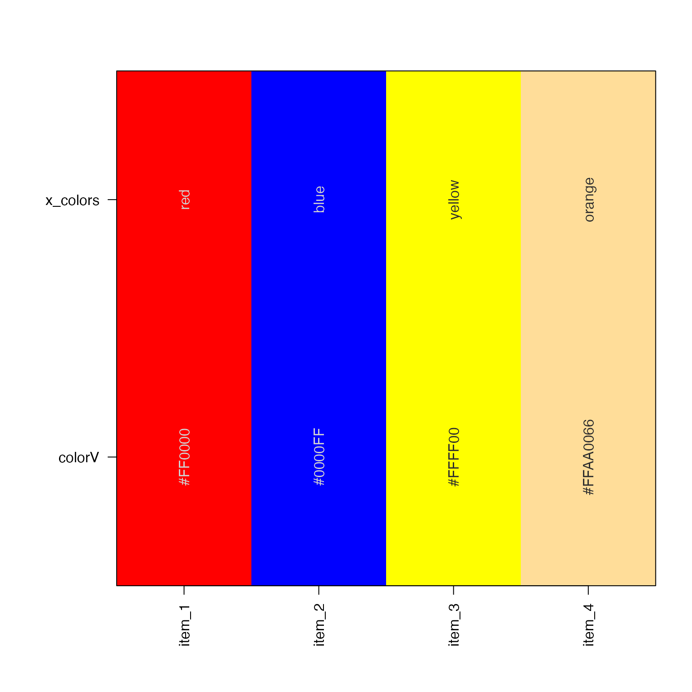

Convert an HCL color matrix to vector of R hex colors
Arguments
- x
numericmatrix of colors, with rownames"H","S","L", or if not supplied it looks for vectorsH,S, andLaccordingly.- H, S, L
numericvectors supplied as an alternative tox, with ranges 0 to 360, 0 to 100, and 0 to 100, respectively.- alpha
numericvector of alpha values, default NULL. If not supplied, and ifxis supplied as a matrix with rowname"alpha", then values will be used fromx["alpha",].- verbose
logicalindicating whether to print verbose output.- ...
other arguments are ignored.
Details
This function takes an HCL matrix,and converts to an R color using
the colorspace package colorspace::polarLUV() and colorspace::hex().
When model="hcl" this function uses farver::encode_colour()
and bypasses colorspace. In future the colorspace dependency
will likely be removed in favor of using farver. In any event,
model="hcl" is equivalent to using model="polarLUV" and
fixup=TRUE, except that it should be much faster.
See also
Other jam color functions:
alpha2col(),
applyCLrange(),
col2alpha(),
col2hcl(),
col2hsl(),
col2hsv(),
color2gradient(),
fixYellow(),
fixYellowHue(),
getColorRamp(),
hcl2col(),
hsv2col(),
isColor(),
kable_coloring(),
makeColorDarker(),
rainbow2(),
rgb2col(),
setCLranges(),
setTextContrastColor(),
showColors(),
unalpha(),
warpRamp()
Examples
# See col2hcl() for more extensive examples
# Prepare a basic HSL matrix
x_colors <- c(red="red",
blue="blue",
yellow="yellow",
orange="#FFAA0066");
hslM <- col2hsl(x_colors);
hslM;
#> red blue yellow orange
#> H 0 240 60 40.0
#> S 100 100 100 100.0
#> L 50 50 50 50.0
#> alpha 1 1 1 0.4
# Now convert back to R hex colors
colorV <- hsl2col(hslM);
colorV;
#> red blue yellow orange
#> "#FF0000" "#0000FF" "#FFFF00" "#FFAA0066"
showColors(list(x_colors=x_colors,
colorV=nameVector(colorV)));
